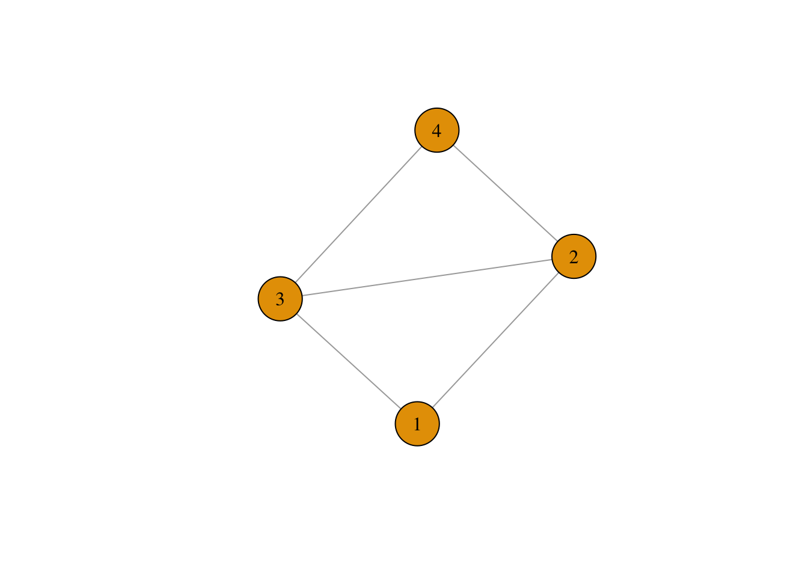

8 Ego Networks
In this section, we analyze ego networks from the GSS network module in 2004. We will use the GSS data to become acquainted with measures of network density and heterogeneity. It will also teach us how to analyzing many networks all at once. In some cases, you might have hundreds of complete networks - for example, data about high schools often has networks from many different high schools. Since the schools are separate, you have to analyze them separately, but doing so one by one is laborious. Here we will learn about ego networks as well as strategies for apply the same function to many networks at once.
We begin by reading in the data from the GSS network module, which I have included in the “Data” section of the materials for this class.
library(igraph)
gss <- read.csv("https://raw.githubusercontent.com/mahoffman/stanford_networks/main/data/gss_local_nets.csv", stringsAsFactors = TRUE) Let’s have a look at the data. You can either click on it in your environment, type View(gss) or:
head(gss)## sex race age partyid relig numgiven close12 close13
## 1 female other 52 independent catholic 0 NA NA
## 2 female other 43 not str republican catholic 0 NA NA
## 3 male black 52 strong democrat protestant 4 1 2
## 4 female other 34 ind,near dem catholic 4 2 0
## 5 male other 22 ind,near dem moslem/islam 0 NA NA
## 6 male black 26 not str democrat protestant 6 0 2
## close14 close15 close23 close24 close25 close34 close35 close45 sex1 sex2
## 1 NA NA NA NA NA NA NA NA NA NA
## 2 NA NA NA NA NA NA NA NA NA NA
## 3 0 NA 2 2 NA 1 NA NA 1 1
## 4 2 NA 2 2 NA 2 NA NA 1 0
## 5 NA NA NA NA NA NA NA NA NA NA
## 6 1 1 1 1 1 2 2 2 1 1
## sex3 sex4 sex5 race1 race2 race3 race4 race5 educ1 educ2 educ3
## 1 NA NA NA NA NA NA NA NA NA <NA> <NA>
## 2 NA NA NA NA NA NA NA NA NA <NA> <NA>
## 3 0 0 NA 1 1 1 1 NA 1 h.s. grad Grad
## 4 1 1 NA 2 2 2 2 NA 1 h.s. grad Grad
## 5 NA NA NA NA NA NA NA NA NA <NA> <NA>
## 6 0 1 1 0 1 1 2 2 1 h.s. grad h.s. grad
## educ4 educ5 age1 age2 age3 age4 age5 relig1 relig2
## 1 <NA> <NA> NA NA NA NA NA <NA> <NA>
## 2 <NA> <NA> NA NA NA NA NA <NA> <NA>
## 3 Bachelors <NA> 56 40 58 59 NA protestant protestant
## 4 Grad <NA> 63 36 34 36 NA catholic catholic
## 5 <NA> <NA> NA NA NA NA NA <NA> <NA>
## 6 Some College Some College 25 25 39 33 30 other other
## relig3 relig4 relig5
## 1 <NA> <NA> <NA>
## 2 <NA> <NA> <NA>
## 3 protestant protestant <NA>
## 4 catholic catholic <NA>
## 5 <NA> <NA> <NA>
## 6 catholic catholic catholicThere are 42 variables. The first five concern the attributes of a given respondent: their sex, age, race, partyid and religion. The next 36 make up the “network” part of the GSS Network Module. The structure can be a bit confusing, especially if you haven’t read any papers that use this data. The basic idea of the module was to ask people about up to five others with whom they discussed “important matters” in the past six months. The respondents reported the number of people whom they discussed “important matters”: which is the variable “numgiven” in our dataset. They were also asked to detail the relations between those five people: whether they were especially close, knew each other, or were total strangers. This accords to the close variables in the dataset, where, for example, close12 is the closeness of person 1 to person 2, for each respondent. Finally they were asked about the attributes of each of the up to five people in their ego network (sex, race, age).
To see why these are called ego networks, let’s take a respondent and graph the relations of the up to five people they said they discussed “important matters” with. To do so, we have to first turn the variables close12 through close45 into an edge list, one for each respondent.
This requires a tricky bit of code. First we use grepl to extract the columns we want. grep basically uses string matching, so it looks through the column names and identifies those with the word “close” in them (look here for more information: https://www.regular-expressions.info/rlanguage.html)
ties <- gss[,grepl("close", colnames(gss))]
head(ties)## close12 close13 close14 close15 close23 close24 close25 close34 close35
## 1 NA NA NA NA NA NA NA NA NA
## 2 NA NA NA NA NA NA NA NA NA
## 3 1 2 0 NA 2 2 NA 1 NA
## 4 2 0 2 NA 2 2 NA 2 NA
## 5 NA NA NA NA NA NA NA NA NA
## 6 0 2 1 1 1 1 1 2 2
## close45
## 1 NA
## 2 NA
## 3 NA
## 4 NA
## 5 NA
## 6 2As an example of what we will do for each respondent, let’s first make a matrix, which we can fill in with the closeness values for a given respondent.
mat = matrix(nrow = 5, ncol = 5)As it turns out, we can assign a person’s close values directly to the lower triangle of the matrix. Here we do it for respondent 3.
mat[lower.tri(mat)] <- as.numeric(ties[3,])And we can symmetrize the matrix since the relation here (closeness) is mutual (i.e. the relation is undirected).
mat[upper.tri(mat)] = t(mat)[upper.tri(mat)]
mat## [,1] [,2] [,3] [,4] [,5]
## [1,] NA 1 2 0 NA
## [2,] 1 NA 2 2 NA
## [3,] 2 2 NA 1 NA
## [4,] 0 2 1 NA NA
## [5,] NA NA NA NA NANice! Now let’s drop any of the respondents who are missing.
na_vals <- is.na(mat)
non_missing_rows <- rowSums(na_vals) < nrow(mat)
mat <- mat[non_missing_rows,non_missing_rows]And set the diagonal to zero, since NAs give igraph trouble
diag(mat) <- 0How does it look? Perfectly symmetrical, like all undirected graphs should be!
mat## [,1] [,2] [,3] [,4]
## [1,] 0 1 2 0
## [2,] 1 0 2 2
## [3,] 2 2 0 1
## [4,] 0 2 1 0Great! We can use this matrix to creat a network for a single respondent, like we did in the last tutorial but this time using the graph.adjacency function since our input data is a matrix. We will specify that we want it to be undirected and weighted.
ego_net <- graph.adjacency(mat, mode = "undirected", weighted = T)How does it look?
plot(ego_net, vertex.size = 30, vertex.label.color = "black", vertex.label.cex = 1)
Cool.. the only problem is that we have to do this for every row in the dataset… what should we do? One option is to create a function, which uses the code above to turn any row in the ties data set into an ego network, and then apply that function to every row in the data. Below is such a function!
make_ego_nets <- function(tie){
# make the matrix
mat = matrix(nrow = 5, ncol = 5)
# assign the tie values to the lower triangle
mat[lower.tri(mat)] <- as.numeric(tie)
# symmetrize
mat[upper.tri(mat)] = t(mat)[upper.tri(mat)]
# identify missing values
na_vals <- is.na(mat)
# identify rows where all values are missing
non_missing_rows <- rowSums(na_vals) < nrow(mat)
# if any rows
if(sum(!non_missing_rows) > 0){
mat <- mat[non_missing_rows,non_missing_rows]
}
diag(mat) <- 0
ego_net <- graph.adjacency(mat, mode = "undirected", weighted = T)
return(ego_net)
}Now we can use lapply to loop through all of the rows in the data and apply the above function to each row. It will return a list of size nrow(ties), in which every item is an ego net of one of the respondents in the data.
ego_nets <- lapply(1:nrow(ties),
FUN = function(x) make_ego_nets(ties[x,]))
head(ego_nets)## [[1]]
## IGRAPH 55c260c U--- 0 0 --
## + edges from 55c260c:
##
## [[2]]
## IGRAPH b9a8b95 U--- 0 0 --
## + edges from b9a8b95:
##
## [[3]]
## IGRAPH 438e7e0 U-W- 4 5 --
## + attr: weight (e/n)
## + edges from 438e7e0:
## [1] 1--2 1--3 2--3 2--4 3--4
##
## [[4]]
## IGRAPH cd904db U-W- 4 5 --
## + attr: weight (e/n)
## + edges from cd904db:
## [1] 1--2 1--4 2--3 2--4 3--4
##
## [[5]]
## IGRAPH 63f40b7 U--- 0 0 --
## + edges from 63f40b7:
##
## [[6]]
## IGRAPH d6c7748 U-W- 5 9 --
## + attr: weight (e/n)
## + edges from d6c7748:
## [1] 1--3 1--4 1--5 2--3 2--4 2--5 3--4 3--5 4--5Awesome! We have a whole list of networks. Let’s take a look at a random network, say, the 1001st ego net.
random_ego_net <- ego_nets[[1021]]
plot(random_ego_net)